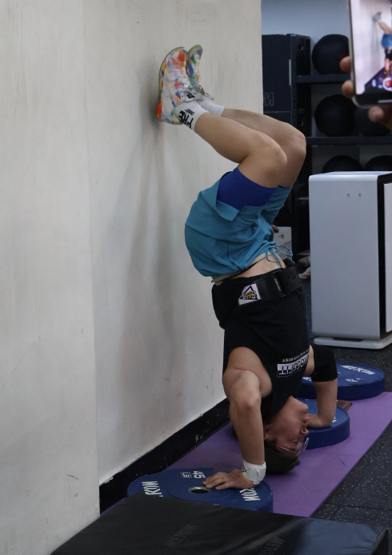
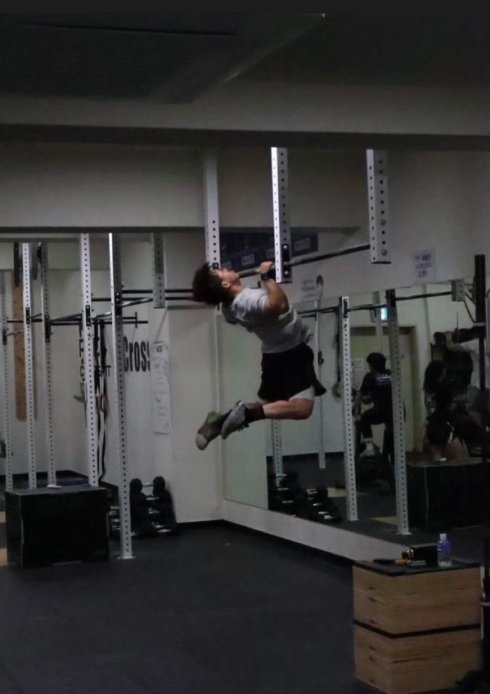
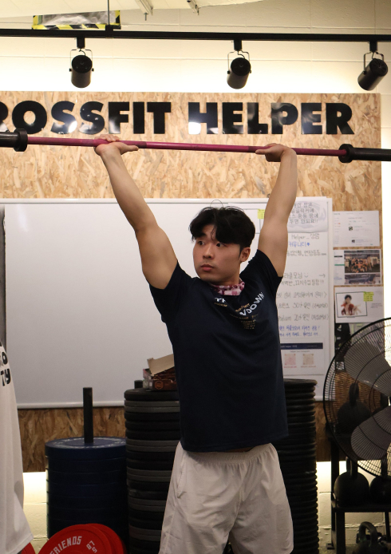
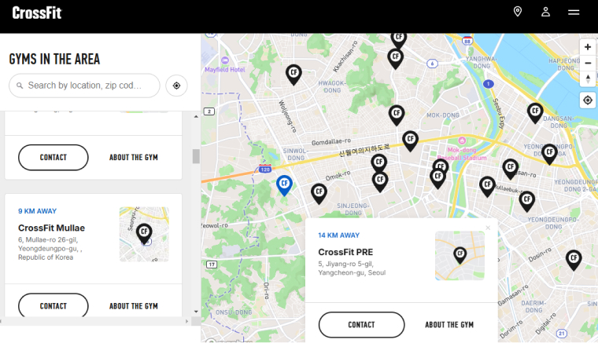
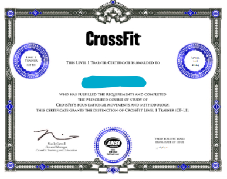
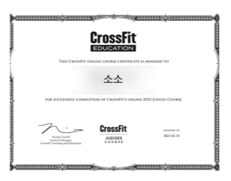

ABOUT
Throwdown
throwdown이란 ~ 매일 하는 WOD(Workout Of the Day)를 여러박스들이 모여서 진행하는 시합형식의 운동입니다. Rx'd와 scale 두 그룹으로 나뉘어 진행되며, Rx'd는 As prescribed로 모든 종목을 규정되로 진행하기 때문에 최고 난이도로 수행하는 것을 의미합니다.
그렇기에 숙달되고 수행능력이 좋은 숙련자들에게 적합한 난이도 입니다. 한편, scale은 개인의 체력과 능력에 맞게 수정하여 수행하는 종목으로 모든 사람들이 동일하게 진행하지는 않으며, 부상예방 및 안정성을 고려하는데 적합합니다. scale의 종류에는 크게 Weight Scale: 무게를 줄여서 하는 스케일, Reps Scale: 횟수를 조절하는 스케일, Rest Scale: 사이사이 휴식을 넣는 스케일, Variation Scale: 동작을 다른 비슷한 동작으로 변형하는 스케일로 구분됩니다.
-

-

-

Certification

Crosfit은 미국에서 시작하여 현재 전세계인들이 좋아하는 운동입니다. 이런 운동을 가르치고 함께 운동하기 위해서는 미국 본사로부터 정식으로 인증 받은 업체만 Crosfit Box라는 명칭을 사용할 수 있습니다. 여러 조건 중 매해 갱신해야 하는 인증 시스템과 코치의 Level1 자격증부터 시작됩니다. 정식 지부 여부를 확인하는 방법은 본사 홈페이지에 map 혹은 Find a Gym에 들어가서 해당 Box를 검색하면 보실 수 있고 주소 또한 일치해야 합니다. 만약 검색을 해도 나오지 않는다면 인증받은 업체가 아닙니다.
-

-
이 자격증은 회원들의 운동 목적과 수행능력에 따라 테크닉, 영양, 프로그래밍 모두 가능하다는 것을 알수 있습니다. 특히 기능적인 부분에서 스쿼트, 프레스, 데드리프트, 역도 등 다양한 운동들을 회원들에게 세부적으로 설명하고 티칭이 가능하다는 것을 증명합니다.
-

-
모든 코치들은 물론이고 일반 회원들도 테스트를 보고 크로스핏 Judge license를 취득할 수 있습니다. 단순히 자격증 취득 하는 것에 그치지 않고 학습한 것을 운동에 적용해 볼 수 있습니다.